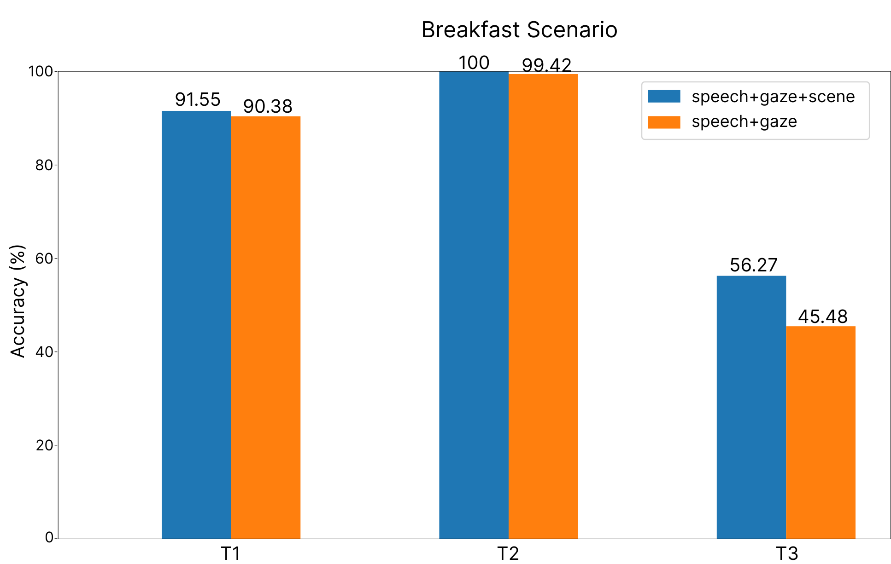

Experiments and results
We evaluated the proposed representation in two different scenarios (a breakfast table and a drinks table) and had multiple users make 3 requests to the robot hinting with their gaze (here, head orientation) to the desired objects
| Scenario/Task | Abstract task | User's request | Goal inference | Target objects |
|---|---|---|---|---|
| Breakfast/T1 | Infer task | "Can you help me with this?" | Pour cereal in the bowl | Cereal box, bowl |
| Breakfast/T2 | Disambiguate object instance | "Could you pass me that bottle?" | Pass the milk bottle for the cereals | Milk bottle |
| Breakfast/T3 | Infer content | "Can I also have some sugar?" | Get the small bowl | Small bowl |
| Drink/T1 | Infer user's preference | "I'm thirsty, can I have something to drink?" | Preference for the cola | Cola bottle |
| Drink/T2 | Disambiguate object instance | "Could you use this glass?" | Use the glass in front of the user | Red glass |
| Drink/T3 | Infer content | "I'd like some ice cubes with it" | Get the bowl with the ice | Bowl |
